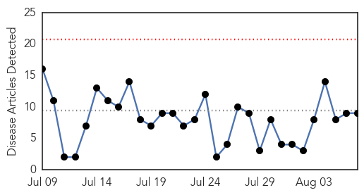
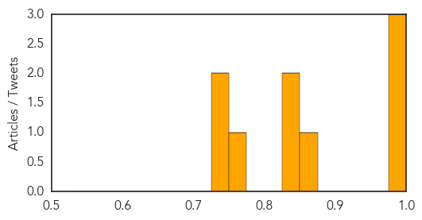
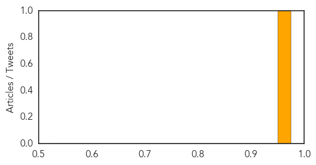

Dengue Fever
30-Day Web Trend
0 alerts, 0 warnings

30-Day Twitter Trend
0 alerts, 0 warnings
Article Locations
Article Confidences
Top Articles:
- 0.988
- Dengue outbreak in Belize
- 0.988
- Is There a Dengue Outbreak in the West?
- 0.980
- Deadly dengue stalks Ahmedabad
- 0.875
- Print this news article
- 0.849
- Delhi Under Dengue Threat After 10-Year-Old's Death
- 0.846
- One more suspected Dengue death in city
- 0.760
- EPD inspects 23,243 places for dengue
- 0.748
- Upstate Medical University Is Awarded Federal Grant to Help Catch Disease-Carrying Mosquitoes
- 0.727
- Carnival in Holguin Suspended Due to Dengue Outbreak
Top Tweets:
-
No tweets found for Aug 07, 2015
Bubonic Plague
30-Day Web Trend
0 alerts, 0 warnings
30-Day Twitter Trend
0 alerts, 0 warnings

Article Locations
Article Confidences
Top Articles:
Top Tweets:
-
No tweets found for Aug 07, 2015